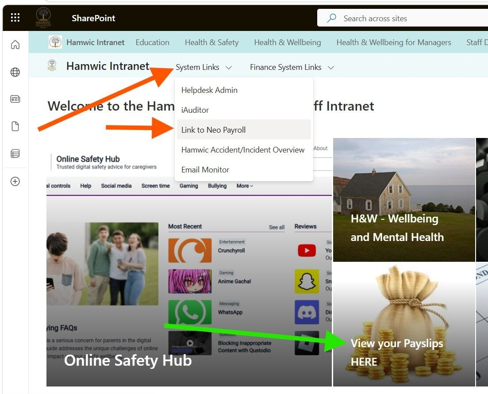
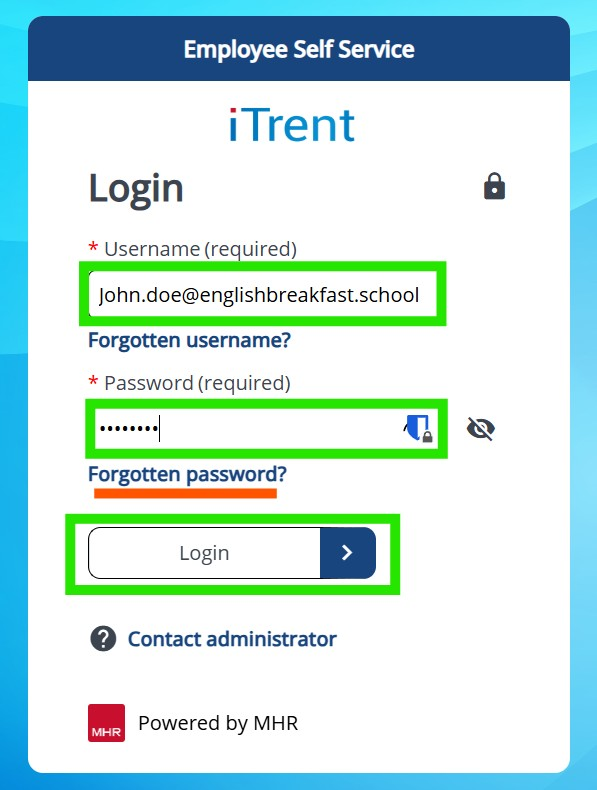

If you are experiencing issues accessing the iTrent service, or if you are seeing error messages such as "Invalid login" or "Check your internet connection," please follow these steps to ensure you are logging in correctly.
To access iTrent, please visit the Hamwic intranet website and navigate to System Links > Link to Neo payroll. Alternatively, you can click on View your payslips HERE, as shown in the image below.

You can also go directly to the iTrent web service by using this link: iTrent web service
Next, click on the "A different account" option, as shown in the image below.

Username: Enter your work email address (e.g., *myname@my.school.domain*).
Password: Enter your password (this is usually your bank account number, unless
you have changed this previously on the portal).
Click the Login button. If you are unsure of your password, you can use the "Forgotten password?" option.
Open the Microsoft Authenticator app on your phone to retrieve the 6-digit
verification
code. If
this is your first time logging in, the iTrent system will guide you through setting up the
Authenticator app with simple instructions.
Once verified, you will be successfully logged in.
💡 Still Need Help?
''
Microsoft Authenticator setup
use
this manual to setup your authenticator app for a first time.
Password Resets
If you cannot sign in, you can ask your Business Manager
(or another
staff
member with iTrent admin access) to reset your password. You will receive an email with
instructions
on how to complete the reset.
IT Support
If you continue to have issues accessing the system, please
contact your IT
support team, and we will be happy to help you.